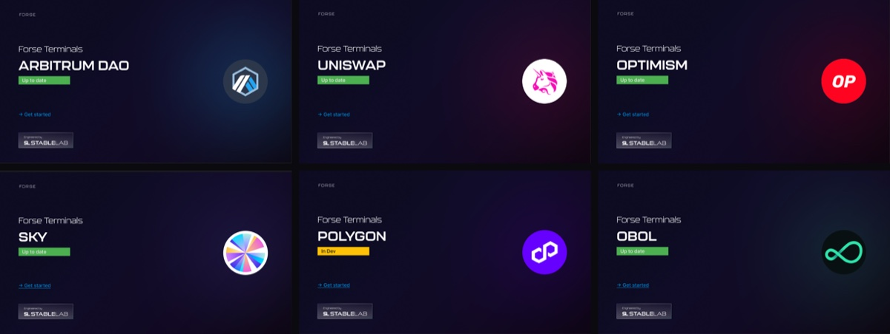
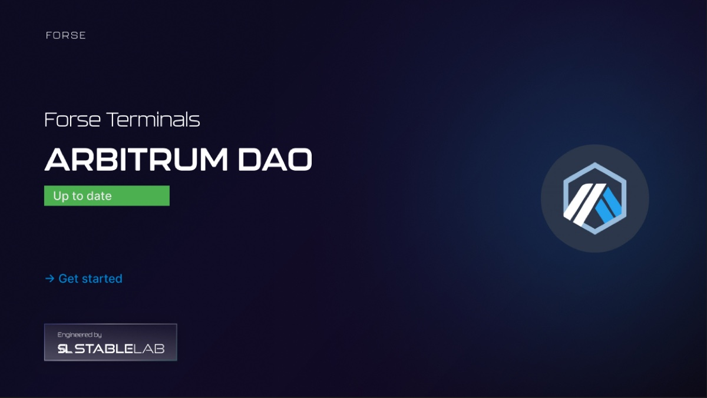
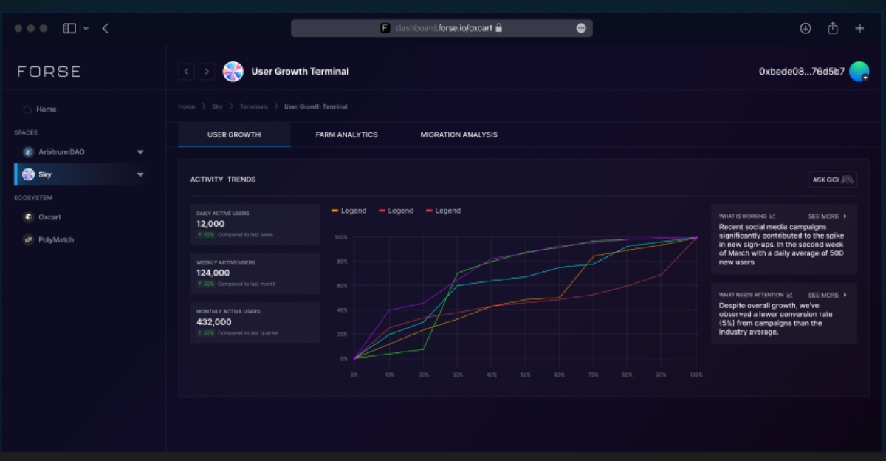
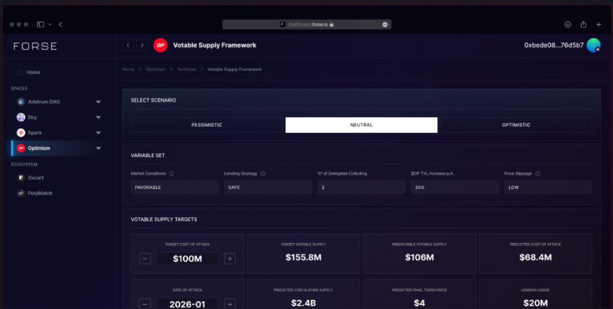
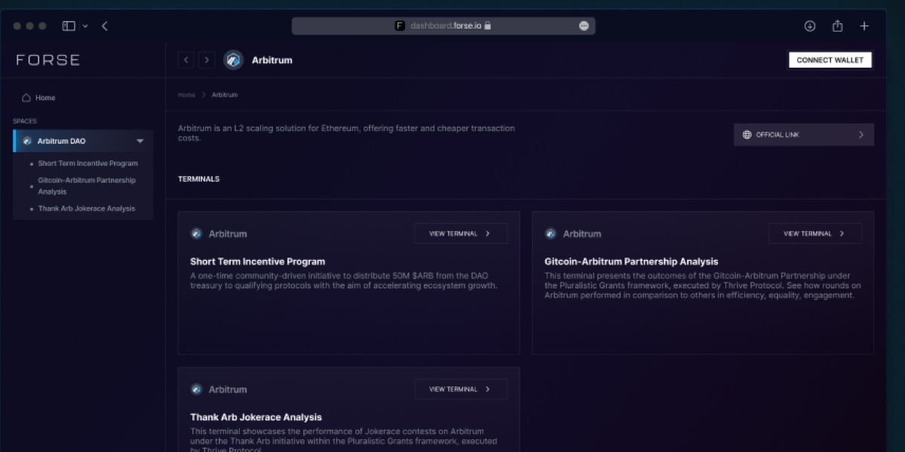

Forse Insights
2024
The first version. Ten ecosystems, ten Figma files, and I designed every terminal on its own before a shared library existed. It shipped and it worked. The reason my 2025 rebuild had to start by retiring the old library is visible in the file list.
Ten files, ten clients
Arbitrum DAO. Uniswap. Sky. Optimism. Polygon. Spark. Obol. ZKsync. Oxcart. PolyMatch. Ten ecosystems, ten files, and nothing shared between them but my habits.1
I opened each one the same way. A cover naming the client, then a versioned presentation of that client’s dashboard sitting in a browser frame.

I tinted each cover to its ecosystem, so a Uniswap stakeholder opening their file lands on magenta and an Obol one lands on teal. It is a small move and I wanted it to be the first signal that the file was made for them rather than forwarded to them.
The file was the deliverable

I put a lot on that cover on purpose. The client’s name. A status badge. A version chip
reading Dashboard Design v1.0.1. A way in. An Engineered by StableLab lockup. The
ecosystem’s own mark, at the size a logo gets when you are proud of the client.
The badge is the piece I have carried into every project since. Most of these files read Up to date in green. Polygon’s reads In Dev in amber. When the handover is a Figma link rather than a running build, the first question in a client’s head is whether what they are looking at is still true, and I wanted the first frame to answer it.
A design file sent to a client is a document with a shelf life. Printing the shelf life on the cover costs one component and saves an email a week.
A chart that reads itself

I built Sky’s User Growth terminal on three tabs: user growth, farm analytics, migration analysis. The left column stacks daily, weekly and monthly actives, each against its own comparison period. 12,000, up 30% on last week. 124,000, up 20% on last month. 432,000, up 30% on last quarter.
The part I am proudest of is the right-hand column. Two panels: What is working and What needs attention. The first says social campaigns drove a March spike averaging 500 new users a day. The second says conversion from those campaigns ran at 5%, under the industry average.
I wanted an analyst’s reading printed beside the chart that produced it. A dashboard that only plots leaves the interpretation to whoever happens to be in the room, which in a DAO is a forum thread. This one commits to a reading and gives you somewhere to disagree with it.
I also put a button marked Ask GIGI in the corner of that card. An assistant, in 2024, two years before the agent product I ended up auditing.
Not a dashboard, a simulator
Optimism’s file is not an analytics terminal at all.

It is called the Votable Supply Framework and it answers a question no chart can: what would it cost somebody to attack this DAO’s governance, and how much votable supply makes that uneconomic.
You choose a scenario, pessimistic, neutral or optimistic. You set the variables underneath: market conditions, lending strategy, number of delegates colluding, annual TVL growth, price slippage. Then you push two figures directly, a target cost of attack and a date of attack, each in a field with a stepper.
Everything else is computed back at you. Target votable supply, $155.8M. Predictable votable supply, $106M. Predicted cost of attack, $68.4M. Then circulating supply, final token price and lending usage.
My design problem was making the difference between those two kinds of number obvious without a word of explanation. I gave inputs fields with steppers and gave outputs neither. Get that wrong and a delegate walks out of the room believing the model told them something they typed in themselves.
What ten files cost

Arbitrum’s file is closer to what people picture: a space holding three terminals, each a card with a description I wrote for somebody who has never heard of the programme.
The sidebar there is already the shape the product kept. Spaces at the top, Ecosystem underneath, Oxcart and PolyMatch sitting apart from the DAOs because they are not DAOs. That survived into version two without an argument. What did not survive was the way I had built it. Ten files with no library between them meant a change to the chart card was ten edits and ten chances to drift, and by 2025 that bill had come due.
Designing each terminal separately is why Optimism got a simulator and Sky got an analyst’s notes. One template would have given both of them a bar chart.
That is how I read it now. Ten programmes really are ten different questions, and answering each on its own terms is what made the product worth buying in the first place. The price was a year of divergence. Paying it down, without losing what the divergence had found, is what I built version two to do.